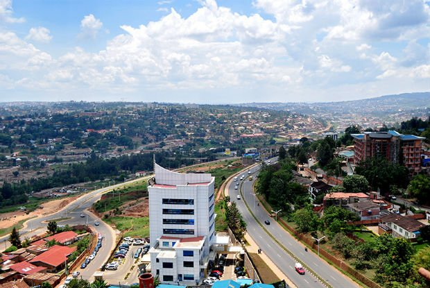
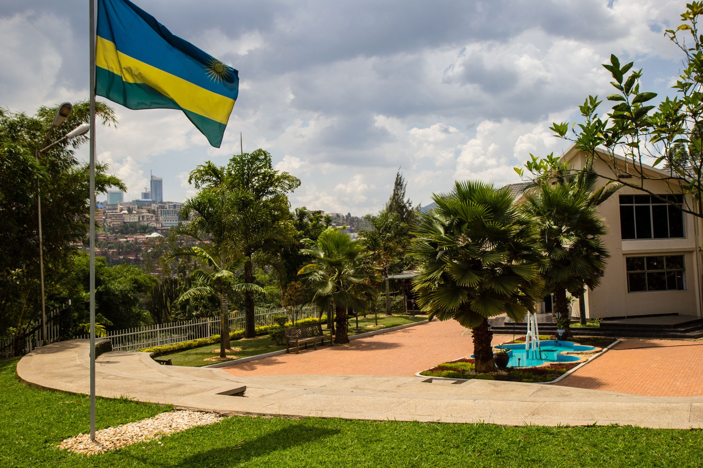
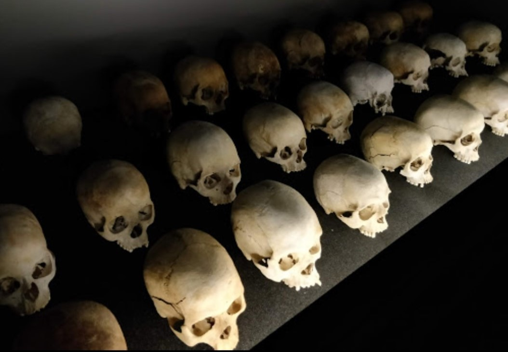

BIENVENUE A KIGALI
Kigali est la capitale du Rwanda. La vie nocturne y est
animée et la gastronomie haute en couleur.
Au Caplaki Crafts Village de la ville, on vend des objets artisanaux traditionnels,
notamment des sculptures sur bois et des paniers tressés..
Kigali City Tower est un immeuble de bureaux et de commerce de grande hauteur à usage
mixte situé à Kigali. Le complexe se compose d'une tour de
vingt étages, la plus haute du pays, d'un centre commercial de quatre étages et d'un
bloc de parking.

Le Mémorial du génocide de Kigali, situé à Kigali, au Rwanda, commémore le génocide rwandais en 1994. Les restes de plus
de 250 000 personnes y sont enterrés. Il y a un centre d'accueil pour les étudiants et les personnes qui souhaitent
comprendre les événements qui ont conduit aux événements de 1994.

